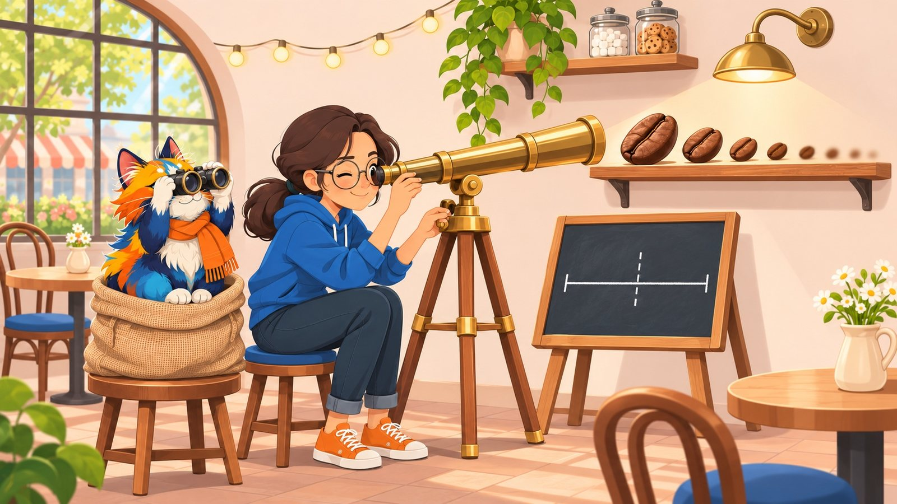

Шаг 9 из 10
MDE: что мы способны заметить

В прошлом шаге короткий тест пропускал настоящие эффекты. Значит, ещё до запуска стоит спросить: какой эффект наш тест вообще способен заметить? Если ответ «только +10 %», а мы ждём +1 %, тест можно не запускать.
Боб заменил фотографии блюд

Новые фото красивее. Думаю, конверсия вырастет процента на два. Запустим тест на недельку?

За неделю мы +2 % не заметим.
Как Алиса это знает, разберём на колоколах. А пока вопрос: если хочешь заметить эффект вдвое меньше, во сколько раз больше людей понадобится?
Выбери вариант.
Мир, где эффекта нет, и мир, где он есть
Серый колокол — какие разницы мы увидим, если фото ничего не меняют. Оранжевый — если фото правда дают эффект. Пунктир — граница значимости: дальше неё лежат 5 % серого колокола. Зелёная часть оранжевого колокола — эксперименты, где мы эффект заметим.
Двигай длину теста и смотри: колокола сужаются и расходятся, зелёная часть растёт. Эффект при этом остаётся тем же.
Ниже этой линии тест слепой
Самый маленький эффект, который тест заметит с шансом 80 %, называют MDE (minimum detectable effect, минимальный заметный эффект). Он зависит от трафика, длины теста и метрики, но не от того, какой эффект мы надеемся получить.
Сколько дней нужно, чтобы заметить эффект
Обычно вопрос ставят наоборот: какой эффект нам важен и сколько для него держать тест.
MDE не берут из прошлой победы
Прошлый тест с фото победил с +6 %. Повторим его в других кафе и рассчитаем длину под те же +6 % — хватит недели.
Опасно. Если план рассчитан на +6 %, а настоящий эффект меньше, тест почти наверняка его пропустит.
Почему нельзя планировать тест под «прошлые +6 %»?
Тест «побеждает», когда шум случайно подыграл эффекту. Поэтому у победителей эффект в среднем завышен, иногда вдвое, — в шаге 10 это видно на игрушке. Если рассчитать новый тест под +6 %, а на деле там +3 %, мощность упадёт с 80 % примерно до 30 %: тест пропустит эффект в двух случаях из трёх.
Идея из книги: Дэвид Шпигельхалтер, «Искусство статистики»
MDE слишком большой. Варианты
Тест на 140 дней никто ждать не будет. Вот что обычно делают. Открой карточки.
Проверь себя
MDE теста за две недели — 3 %. Тест закончился: +1,5 %, незначимо. Что можно сказать?
Тест хорошо замечает эффекты от 3 % и больше. Эффект в 1–2 % он легко пропускает, так что про него сказать ничего нельзя.
Тест за неделю замечает +4 %. Боб хочет замечать +1 %. Сколько недель нужно?
Эффект меньше в 4 раза, значит людей нужно в 4² = 16 раз больше. При том же трафике это 16 недель.
Как уменьшить MDE, не удлиняя тест?
MDE зависит от того, сколько людей в группах. При 90/10 в тесте всего десятая часть трафика, и колокол разницы гораздо шире.
Боб хочет проверить напоминание о годовщине первого заказа. Оно срабатывает примерно у 1 гостя из 1000 в неделю. В тесте неделя и по 500 гостей в группе. Что покажет тест?
Напоминание сработает у 0,5 гостя на группу — то есть в группе будет ноль или один такой человек. Такой тест не может заметить даже огромный эффект. Прежде чем запускать, прикинь, сколько людей вообще столкнутся с изменением: MDE считают по ним, а не по всем гостям.
Вопрос про редкое напоминание — идея из книги: Дарелл Хафф, «Как лгать при помощи статистики»
Сначала MDE, потом тест
- У каждого теста есть порог: эффекты меньше него он почти не замечает.
- Чтобы заметить эффект вдвое меньше, нужно вчетверо больше людей.
- Эффект для расчёта — тот, что важен бизнесу, а не цифра прошлой победы: победители обычно завышены.
- Порог зависит от трафика, длины теста, сплита и шумности метрики. От наших надежд он не зависит.
- Считаем порог до запуска. Если он больше ожидаемого эффекта, меняем план: дольше, больше трафика, другая метрика.
Теперь у того, что мы сделали руками, есть названия:
- MDE
- минимальный эффект, который тест заметит с шансом 80 %
- Мощность
- шанс заметить эффект заданного размера, если он есть
Дальше, последний шаг: когда зелёная клетка в отчёте врёт, даже если всё посчитано правильно.